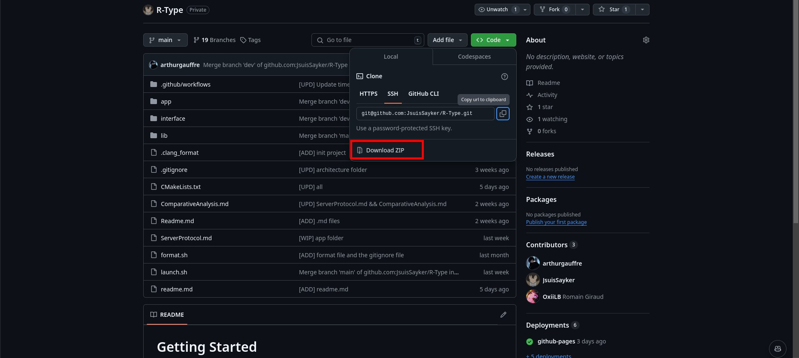

Installation
Dependencies
This project requires the following dependency:
The project is configured to download the dependency automatically.
However you need to have CMake and clang++ installed on your machine. If you're on Windows, you need to have Visual Studio 2022 installed.
Build the Project
On Linux
First you need to clone the latest version of the repository:
git clone git@github.com:JsuisSayker/R-Type.git
Then you need to run the following command:
If the executables r-type_server and r-type_client are created go to the Launch section.
However if the executables are not created, please look at the Troubleshooting section.
If you have any questions about the script and his arguments, please run the following command:
or
On Windows
First you need to download the ZIP file of the project and extract it.

Now you can execute the following command in a terminal:
If the executables r-type_server and r-type_client are created go to the Launch section.
However if the executables are not created, please look at the Troubleshooting section.
Troubleshooting
Please look at the error message that appear:
- "Please install CMake first.": You can download it here.
- "Please install "Visual Studio 2022" first": You can download it here.
Launch the Project
To launch the R-Type project, you need to run the following commands in a terminal.
First you must launch the server:
Then launch the client in another terminal to connect to the server:
For each client that want to connect to the server, you need to launch a new terminal and run the client executable.
How to Play
- First you need to launch server and the client(s).
- Here is the default keys to play the game that you can change in the settings:
- Move Up:
W
- Move Down:
S
- Move Left:
A
- Move Right:
D
- Shoot:
Space
Configuration files
The configuration files are located in the configs folder. You can change the settings of the game by modifying the config.json files. Here is the differents key words that you can change:
- "serverSystems": Array with all the system that run on the server.
- "localSystems": Array with all the system that run on the client.
- "waveSystem": All the settings of the wave system.
- "waveNumber": The number of wave that you want to play.
- "waveInterval": The interval between each wave.
- "background": If you want to display the background or not.
- "path": The path of the background image.
- "velocity": The velocity of the background.
- "x": The velocity on the x axis.
- "y": The velocity on the y axis.
- "size": The size of the background.
- "x": The size on the x axis.
- "y": The size on the y axis.
- "player": All the settings of the player.
- "path": The path of the player image.
- "velocity": The velocity of the player.
- "x": The velocity on the x axis.
- "y": The velocity on the y axis.
- "size": The size of the player.
- "x": The size on the x axis.
- "y": The size on the y axis.
- "shoot": The settings of the shoot.
- "path": The path of the shoot image.
- "velocity": The velocity of the shoot.
- "x": The velocity on the x axis.
- "y": The velocity on the y axis.
- "size": The size of the shoot.
- "x": The size on the x axis.
- "y": The size on the y axis.
- "enemies": All the settings of the enemies.
- "path": The path of the enemies image.
- "velocity": The velocity of the enemies.
- "x": The velocity on the x axis.
- "y": The velocity on the y axis.
- "size": The size of the enemies.
- "x": The size on the x axis.
- "y": The size on the y axis.
- "shoot": The settings of the shoot.
- "path": The path of the shoot image.
- "velocity": The velocity of the shoot.
- "x": The velocity on the x axis.
- "y": The velocity on the y axis.
- "size": The size of the shoot.
- "x": The size on the x axis.
- "y": The size on the y axis.
- "structure": All the settings of the structure.
- "timer": The timer of the structure.
- "path": The path of the structure image.
- "velocity": The velocity of the structure.
- "x": The velocity on the x axis.
- "y": The velocity on the y axis.
- "size": The size of the structure.
- "x": The size on the x axis.
- "y": The size on the y axis.
Authors